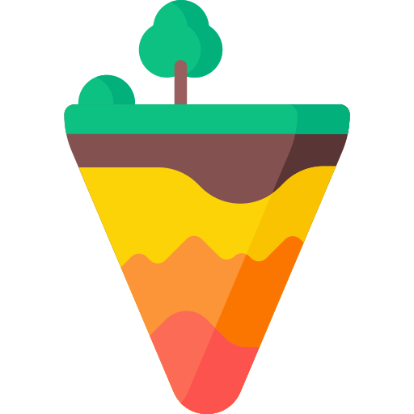

China
Boas-vindas à China
Localização Geográfica
Ásia Oriental, com fronteiras com 14 países.
Geográfia
Montanhas, Planícies e o Rio Yangtzé.
Pratos Típicos
Pato à Pequim, Jiaozi, Dim Sum.
Futebol
Crescimento e Investimentos, Super Liga Chinesa, Seleção Nacional, Desenvolvimento de Talentos.
Dados Demográficos
População de mais de 1.4 bilhão de habitantes.
Clima
Variado, desde Subtropical a Subártico.
Setores Industriais
Tecnologia e Manufatura: Crescimento e Inovação.
Sustentabilidade
Energia Limpa: Investimentos em Fontes Renováveis.
Pontos Turísticos
O Buda Gigante de Leshan - Leshan

O Templo do Céu - Pequim

O Exército de Terracota - Xi'an

A Grande Muralha da China - Pequim

Os Jardins Clássicos de Suzhou - Suzhou